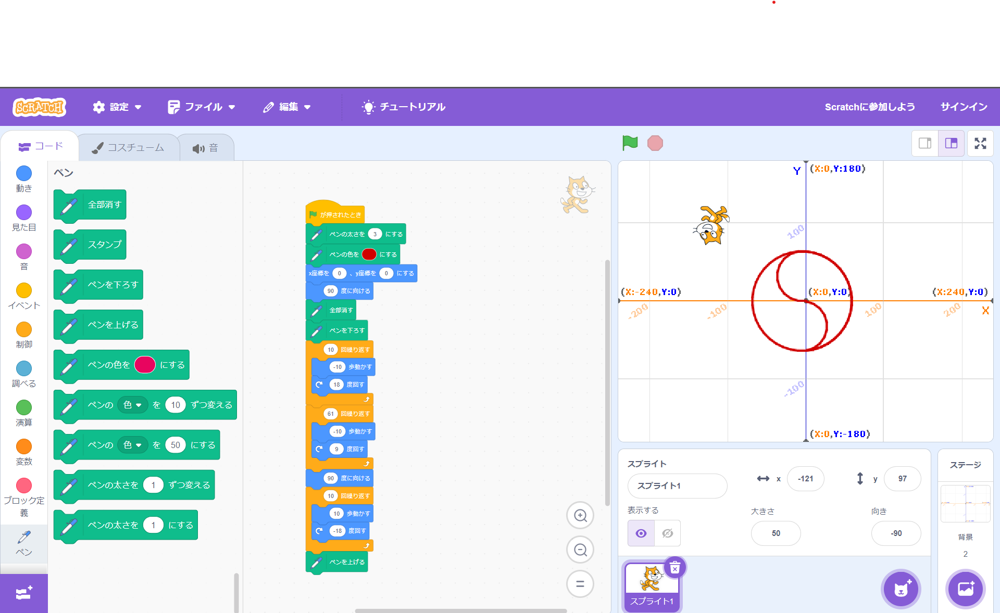
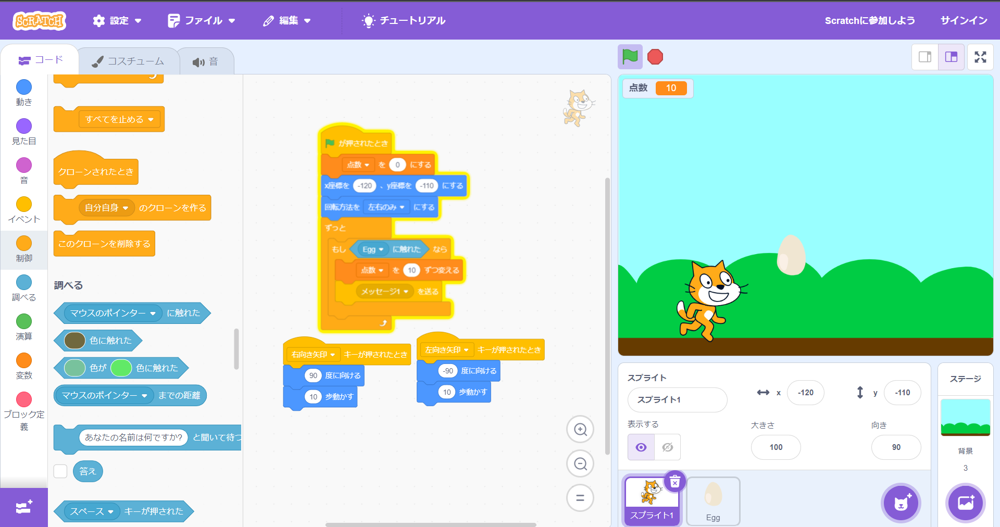

1-1 サイエンスアート

1.内容
スクラッチを使って線を書くプログラムを制作した。まず、猫を中心に移動させ、中心から、円を描きながら中心の真上の位置に来るまで移動させた、そこから、10歩進む、6°曲がるをくりかえし、少し大きな円を描いた。1周半させ、中心の点の真下の位置まで猫を移動させた。そこから、反時計回りに進みながら、中心の点に向かって円を描きながら移動させた。このプログラムで生成される図形は、陰陽魚図と呼ばれる陰陽師のマークで、この図形を選んだ理由は特にないです。
2.感想
Scratchで行うプログラムは"どのブロックがどの働きをするか"が書いてあり、とても分かりやすく、組みやすかった。ですが自由度があまりないなと思った。基本的にどの動きでもプログラムを組むことはできるが、組むために回りくどい手段で組む必要が出てきたりした、そこが少し難しい点だと思った。しかしながら、Scratchを組むときにどれだけ簡単に、ブロックを使用せずにプログラムを組めるかを考えるのはとても楽しかった。例えばだんだん入力する数値を増やしていきたい！となったときに、1進む、2進む、3進む、というプログラムを組むとブロックを大量に使用してしまい、あまりきれいなプログラムに見えない、そこで変数ブロックを使用して、変数を1ずつ増やすプログラムを繰り返せば、使用するブロックを減らすことができ、シンプルなものにできる。
1-2 ゲーム

1.内容
このゲームは猫を左右に操作し、上から落ちてくる卵をキャッチするゲームです。たまごは1つずつ落下してきて、キャッチすると点数が10ずつ増えます。送信受信のブロックを使用していて、猫が卵に触れた時、メッセージ１という信号を送信する、メッセージ１が送信されたとき、点数という変数を10ずつ増やすプログラムを組んでいるので、点数を確認できる。
2.感想
このゲームを制作するときに大事だったのはメッセージ１を送るプログラムの部分だと考えた。なぜならこのプログラムは、コントローラーなどの遠隔操作をするときのプログラムを組むために利用できるからだ。このゲーム作りを行って、自分が思っているよりも簡単にゲームは作れるんだなと思った。世の中にあるゲームは今回作ったゲームをさらに細かくデザインや動きの滑らかさ、3D化などをこだわったゲームようなものも多いので、"ゲーム作り"に実感が持てた。